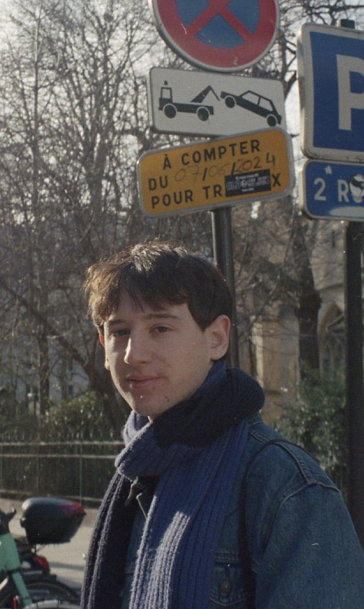

Eliot Guenin is a French composer, researcher and pianist based in Paris. Currently studying composition with Aurélien Dumont and Laurent Durupt in the Créteil Conservatory, he also is a student of the Arts, Litteratures & Languages Master of the EHESS, Ecole des Hautes Etudes en Sciences Sociales under the mentoring of Esteban Buch, where he continues his cursus after his Musicology Bachelor from the Lyon II University.
His works, standing at the intersection of theoretical research and sonic experimentation, are inherently interdisciplinary and include a piece for solo Cello for Elena Andreyev or an open work for L'Instant Donné.
On the research side, he explores the theme of "Sonic Biopolitics in the Streaming Era: Subjectivation of Individual Somatheques through Sound to the Capitalocene." He aims to examine how the algorithmic flows of streaming platforms serve not merely as vehicles for distribution, but as mechanisms of power that shape individual subjectivities. The project will involve a biopolitical interrogation of contemporary music and the ways in which it is consumed via streaming.